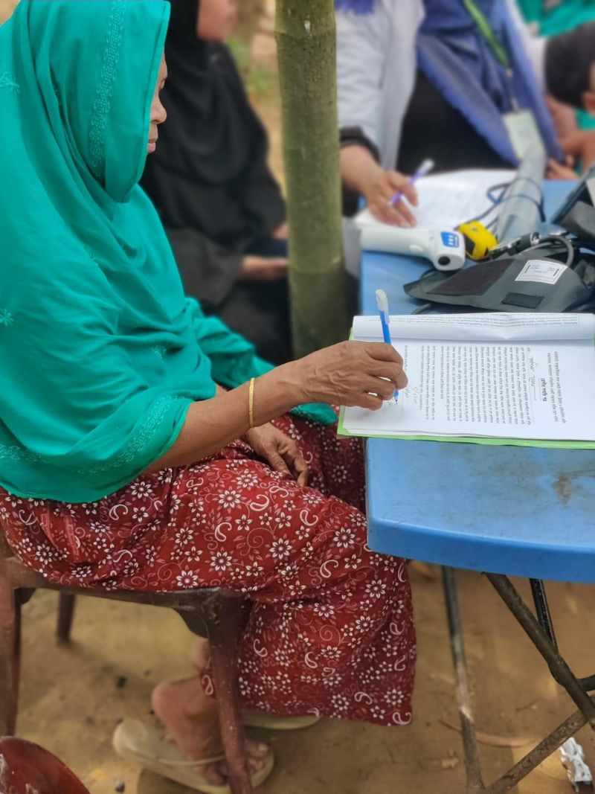
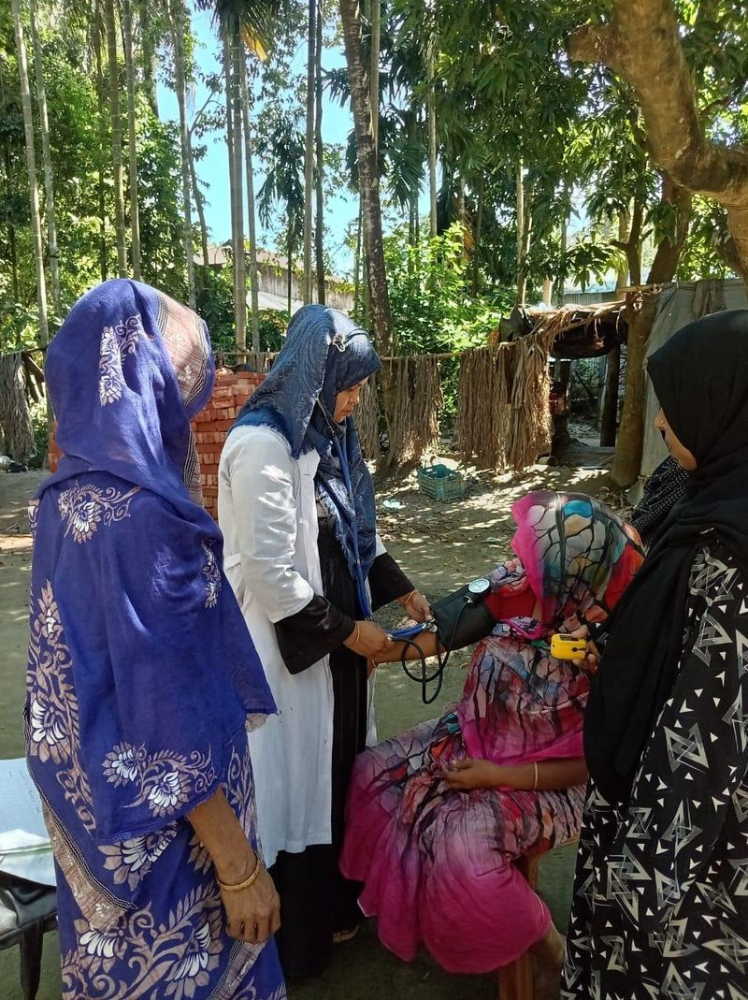
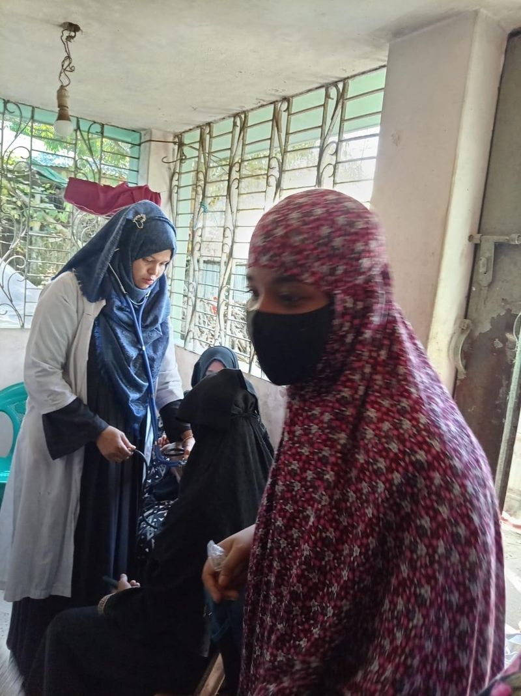
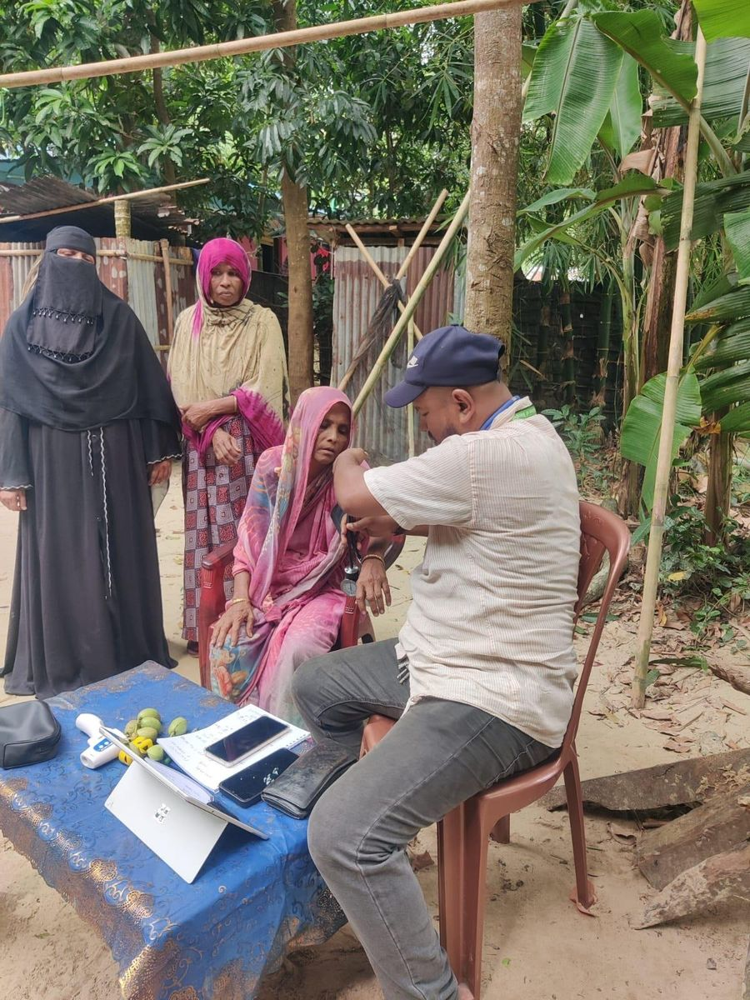
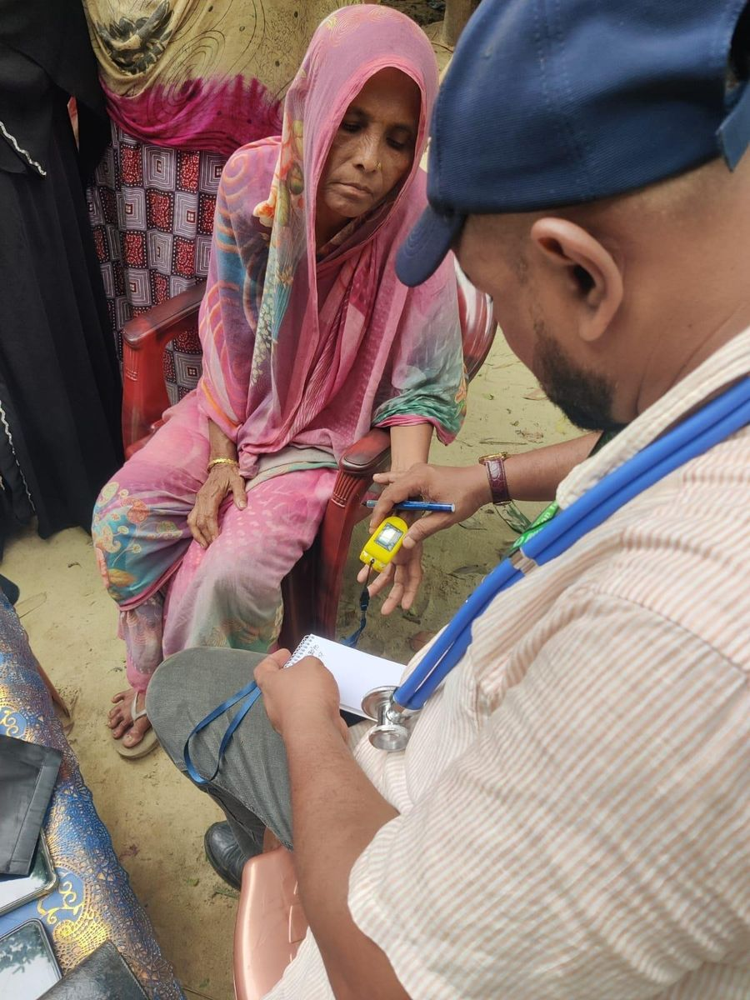
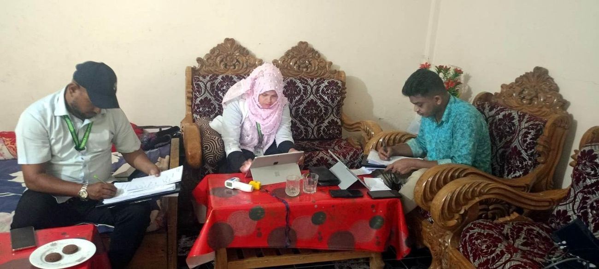
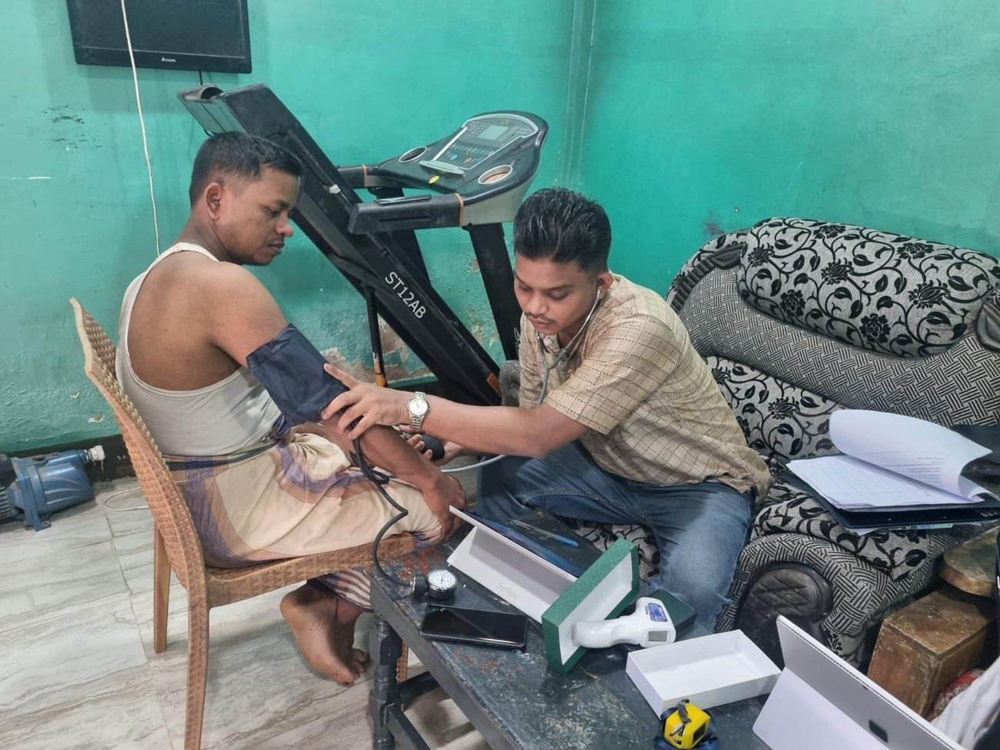

Global Health
Upskill frontline workers.Transform global health.
Doctor AI is a premier clinical AI company that blends a humanistic approach to medicine with an excellent clinical decision support tool, with patents across the entire health AI space.



HOPE Foundation pilot · Cox's Bazar, Bangladesh
Healthcare at the doorstep.
I am excited to share some progress from an active collaboration effort between Doctor AI and HOPE Foundation for Women & Children of Bangladesh where we deliver healthcare to the doorstep. We tap into the frontline of healthcare - community health workers - to meet people where they are in their village homes in Cox's Bazar, Bangladesh. We intend to dispel the notion that those "who are sick enough will go to the doctor." We argue that the sick often go too late, contributing to the overwhelming prevalence of deaths due to unmanaged chronic disease in the country. Many medications that could be used to extend life (quality and quantity) are not prohibitively costly, yet individuals go undiagnosed for years, silently killing them. Overlay this with a lack of cellphones and literacy that leave this same population disconnected from traditional telemedicine solutions. In-person doctor visits are also ruled out due to physician shortages and geographic barriers to access.


Now imagine you work a manual labor job. The nearest clinic is miles away by foot, and going to the doctor means missing a full day of wages - or, worse, losing your job. You are forced to ignore your physical health. Then, a community health worker comes to your doorstep for a free check-up. After taking your vitals, they ask whether you have any symptoms. You might offhandedly mention that you have been more tired than usual. How can anyone discern whether this is due to poor sleep or an underlying chronic condition? In this project, we upskill community health workers with Doctor AI-powered tablets to allow them to ask questions and collect a history like a seasoned physician. By the end of the visit, a standardized note with a diagnosis and treatment plan outline is sent to a physician dashboard. Miles away, the physician spends 2-3 minutes reviewing the case with the detailed history and determining the best treatment. They sign, and a prescription is printed on the portable printer carried by the community health worker. At the doorstep. For more serious cases, a referral is made to the appropriate level of care, reducing unnecessary walk-ins at overcrowded free clinics in the area.

I believe this is a scalable solution to serving the excluded. To top it all off, this approach builds an EMR in technologically austere communities and collects disease prevalence data at the household level, useful for public health and epidemiological agencies. This workflow is being executed daily by our amazing field team at the HOPE Foundation for Women & Children of Bangladesh.
